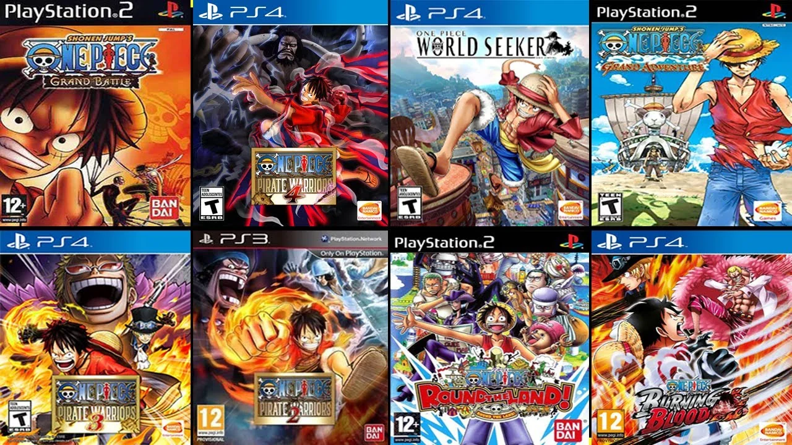

Algunos videojuegos que a tenido la obra son:
-
One Piece Round the Land PS2 · 3/12/2004 es un videojuego que se sumerge en el universo del manga y anime popular One Piece. Este juego pertenece al género de acción y aventura, desarrollado por la empresa Ganbarion y publicado por Bandai. Fue lanzado exclusivamente para la consola PlayStation 2, lo que significa que aquellos interesados en la serie One Piece y propietarios de esta consola podrían disfrutar de una aventura única protagonizada por Luffy y su tripulación.
-
One Piece Grand Battle Rush GCN · Año 2005 PS2 · 30/9/2005 es un videojuego de lucha basado en el popular anime y manga One Piece. Desarrollado por Ganbarion y publicado por Bandai, el juego fue lanzado en Japón en marzo de 2005 para PlayStation 2 y GameCube. Es parte de la serie de juegos One Piece Grand Battle! y sigue la fórmula de sus predecesores al permitir a los jugadores combatir en arenas basadas en varias localizaciones del mundo de One Piece.
-
One Piece: Grand Adventure PS2 GCN · 24/11/2006 desarrollado por Ganbarion y publicado por Namco Bandai Games, es un videojuego de lucha y aventura lanzado en 2006. Basado en la popular serie de anime y manga One Piece, el juego lleva a los jugadores a un viaje emocionante por el Gran Line, enfrentándose a enemigos icónicos y reclutando aliados para la tripulación del Sombrero de Paja. Con una mezcla de combate en arenas y elementos de juego de rol, One Piece: Grand Adventure ofrece una experiencia profunda y entretenida que captura el espíritu de aventura y camaradería de la serie.
-
One Piece: Pirate Warriors PS3 · 21/9/2012 es un videojuego de acción y aventura desarrollado por Omega Force y publicado por Namco Bandai Games. Lanzado en 2012, este título está disponible para PlayStation 3 y más tarde para otras plataformas bajo varias secuelas. El juego combina la emocionante narrativa y los personajes del popular anime y manga One Piece con la jugabilidad estilo "musou" de la serie Dynasty Warriors de Omega Force.